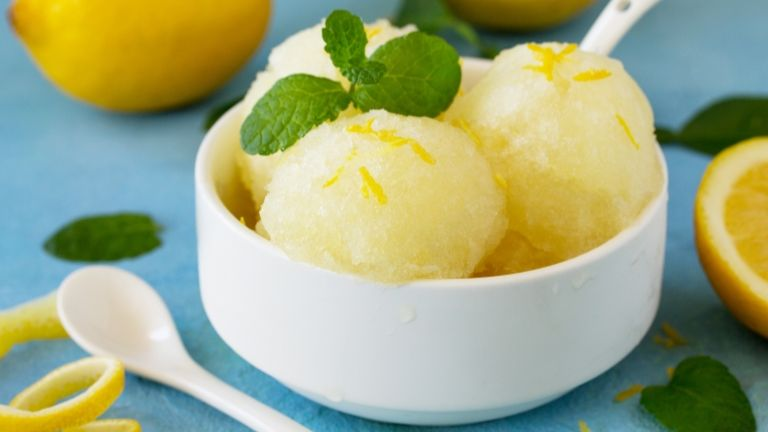

Home
Lemon Sorbet

Ingredients
- 1/2 cup granulated sugar
- 1 tablespoon light corn syrup
- 1 cup warm water
1/2 cup lemon juice
Steps
- In a large bowl, whisk together sugar, corn syrup, and warm water until sugar is dissolved. Add lemon juice and whisk until fully combined.
- Pour base into an empty CREAMi™ Pint. Place storage lid on pint and freeze for 24 hours.
- Remove pint from freezer and remove lid from pint. Place pint in outer bowl, install Creamerizer™ Paddle onto outer bowl lid, and lock the lid assembly on the outer bowl.
Place bowl assembly on motor base and twist the handle right to raise the platform and lock in place.
- Select SORBET.
- When processing is complete, remove the sorbet and serve immediately.